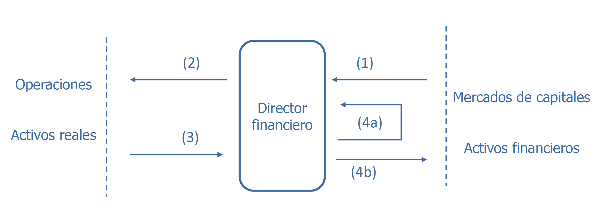
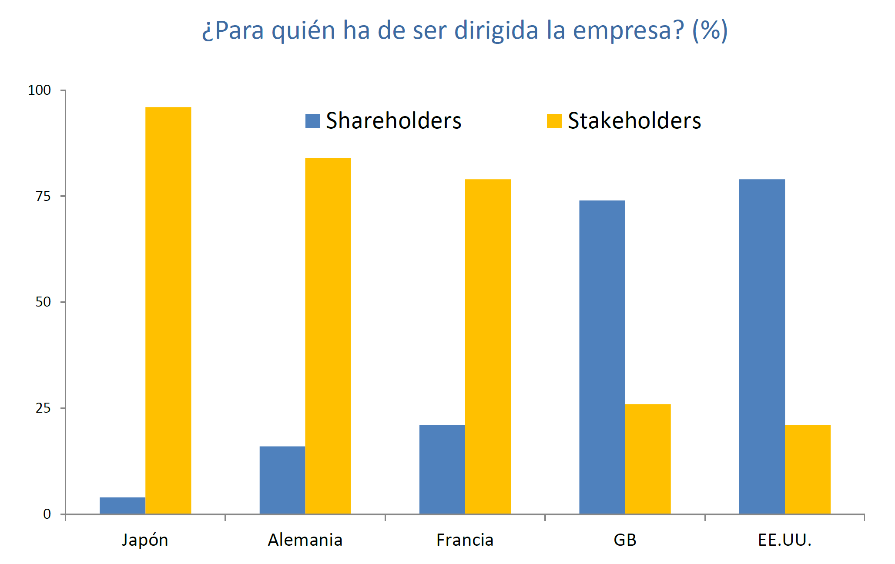
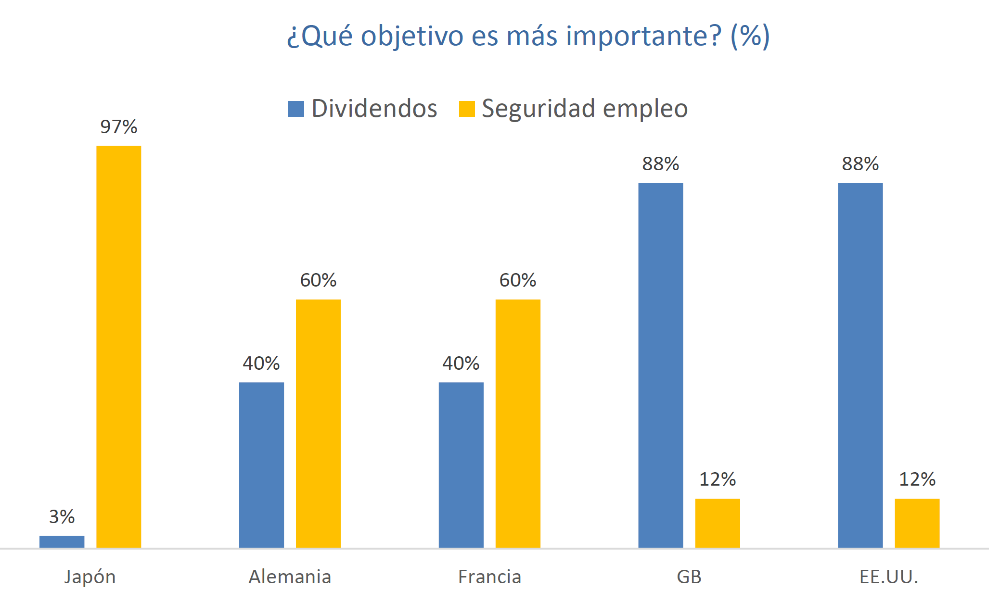

Tema 1 - Introducción🔗

Funciones de un director financiero de una empresa:
El director financiero está en el medio del activo y el pasivo:
- Capta los recursos financieros de los mercados (decisión de financiación: cómo me financio)
- Invertir esos recursos financieros en proyectos de inversión (decisión de inversión: en qué invierto)
- Los proyectos de inversión generan flujos de tesorería.
- El director financiero debe elegir qué hacer con la tesorería:
- Reinvertir la tesorería en la empresa
- Restituir la tesorería (a los inversores si la financiación es propia o a los bancos si la financiación es ajena)
El director financiero toma decisiones de inversión y de financiación:
- Las decisiones de inversión contribuyen a crear la estructura económica de la empresa (activo).
- Las decisiones de financiación contribuyen a crear la estructura financiera de la empresa (pasivo).
Nos dedicaremos a la estructura financiera, también llamada estructura de capital. Nos dará una combinación óptima de recursos óptimos y recursos ajenos.
Conceptos🔗
- Equilibrio rentabilidad riesgo: la rentabilidad es la capacidad de generar rendimientos. Se mide por la esperanza matemática. El riesgo es la posibilidad de no obtener la rentabilidad esperada. Se mide por la varianza o por la desviación típica.
- Riesgo y diversificación: los activos reales crean riesgo económico[^1], que se evalúa en términos de variabilidad de los beneficios. El riesgo financiero se origina por la forma de financiación. Depende de las decisiones del director financiero.
- Valor del dinero en el tiempo: basado en la premisa de que cualquier agente económico prefiere un dinero hoy que un dinero en el futuro. Vale más una unidad monetaria hoy que una unidad monetaria mañana.
- Tesorería vs beneficio: aunque haya muchos beneficios, si en un momento no tenemos tesorería y hay que hacer frente a obligaciones de pago, la empresa se va a pique.
- Flujos incrementales: repasar esto, ha dado rodeos
- Mercados de productos competitivos: cualquier mercado es competitivo si existe una cantidad muy grande de compradores y vendedores. Ninguno de ellos por separado no puede influir en el precio del producto.
- Mercados de capitales eficientes: el precio del mercado de un título es una estimación correcta del valor teórico o intrínseco del título. El precio del mercado de un título es su precio de cotización, es el precio al que se compra y se vende. El valor teórico o intrínseco es el valor actual de todos los flujos que genera ese título. En un mercado ineficiente se produce el efecto del arbitraje, por el que se ajustan los precios y el mercado se vuelve eficiente.
- Otro aspecto de la eficiencia es la información: toda la información debe ser correcta y a disposición de todos.
Eficiencia débil- los precios de los títulos reflejan toda la información histórica de esos títulosEficiencia intermedia- los precios de los títulos reflejan además la información publicadaEficiencia fuerte- los precios de los títulos reflejan además la información privada
- Otro aspecto de la eficiencia es la información: toda la información debe ser correcta y a disposición de todos.
- Directivos-accionistas: un accionista quiere dividendos, el director financiero quiere maximizar el valor de la empresa. Teoría financiera de la agencia.
- No neutralidad de los impuestos: un impuesto es neutral si no distorsiona las decisiones de los agentes económicos. En la realidad los impuestos no son neutrales.
Beneficios
Siempre hablaremos de beneficios netos, antes de aplicar impuestos.
Tipo de Interés
Tipo de Interés: tasa de retorno que refleja la relación de una cantidad de dinero en diferentes instantes de tiempo. Se puede considerar también como un coste de oportunidad
No puedo usar ese dinero mientras lo tengo depositado en el bancoEFE
El director financiero tiene que estar pendiente de la tesorería, ya que aunque la empresa tenga muchos beneficios, si nuestra tesorería es 0 y tenemos que pagar a los proveedores, se va a pique.
Para ello hay que estar pendiente del Estado de Flujos de Efectivo, que recoge todos los cambios de tesorería.
Conceptos nuevos:
- Riesgo económico: riesgo asociado a las operaciones de la empresa, es independiente de su financiación. Se evalúa en términos de variabilidad de los beneficios. Los activos reales (maquinaria) crean riesgo económico. Ejemplo: Si la empresa fabrica botellas, el riesgo económico sería el riesgo de que el mercado ya no demande botellas y la empresa se vaya a pique.
Ámbito y objetivo de la dirección financiera de la empresa🔗
Accionistas vs Partícipes🔗

- 🟨 Stakeholders: partícipes de la empresa (directivos, proveedores, clientes, Hacienda Pública, etc.)
- 🟦 Shareholders: accionistas, propietarios de la empresa

Ámbito y objetivo🔗
Teoría de la agencia
La empresa es un nexo de contratos entre los partícipes de la empresa.
Preeminencia de la creación de valor (limitaciones del beneficio):
- Múltiples periodos. Ej: considerar 10 años.
- Manipulación del beneficio. Ej: durante un año no hace el mantenimiento durante ese año para aumentar beneficios, lo que generaría problemas a largo plazo porque se romperá la maquinaria.
- Riesgo. Se mide por la variabilidad del beneficio.
- Divergencia de intereses. Los directivos piensan en la creación de valor en la empresa pero los accionistas sólo piensan en los dividendos. También dentro de los accionistas: los mayoritarios quieren aumentar el valor de la empresa (y de sus acciones) y los minoritarios quieren dividendos.
Creación de valor para los accionistas (shareholders)🔗
- Dificultad de establecer un objetivo corporativo (maximización en múltiples dimensiones).
- Maximización del valor a largo plazo.
- El mercado como marco de asignación de recursos. El mercado es el marco de valoración de títulos.
- Relación entre valor a largo plazo de la empresa y de las acciones.
El mercado primario es el mercado de emisión, en el que se ponen en circulación los títulos de las compañias.
El mercado secundario es donde se compran y se venden los títulos.
Creación de valor para los partícipes (stakeholders)🔗
- Debilidades del enfoque basado en los accionistas
- Capital reputacional. El cumplimiento de los contratos crea valor
- Valor para el accionista y contratos implícitos
Relación enter ambos enfoques🔗
En ambos enfoques la creación de valor es una condición necesaria.